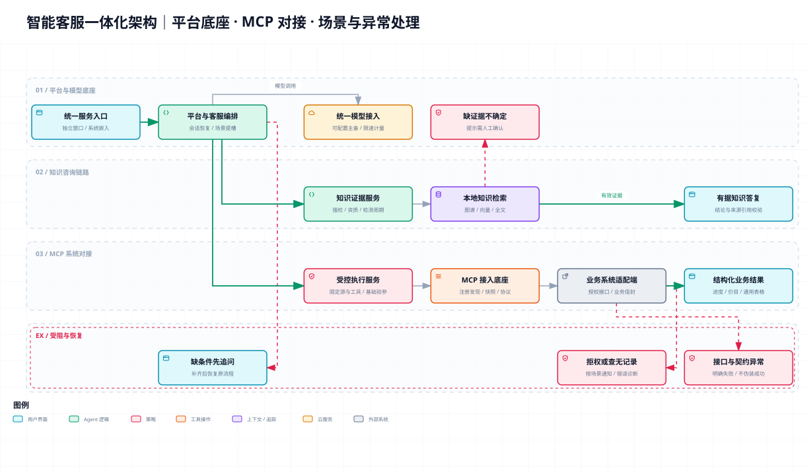

智能客服一体化架构
一张图呈现平台底座、智能客服场景、MCP 系统对接，以及链路受阻时的追问、人工确认建议和错误处理。

业务查询走固定 MCP 工具，不生成业务 SQL；真实系统身份、业务授权、审批白名单与只读约束需逐系统落实。演示接口不等于生产已接通，模型主备也不等于自动纯检索降级。依据为当前工作区代码，不作为生产验收证明。
一张图呈现平台底座、智能客服场景、MCP 系统对接，以及链路受阻时的追问、人工确认建议和错误处理。

业务查询走固定 MCP 工具，不生成业务 SQL；真实系统身份、业务授权、审批白名单与只读约束需逐系统落实。演示接口不等于生产已接通，模型主备也不等于自动纯检索降级。依据为当前工作区代码，不作为生产验收证明。